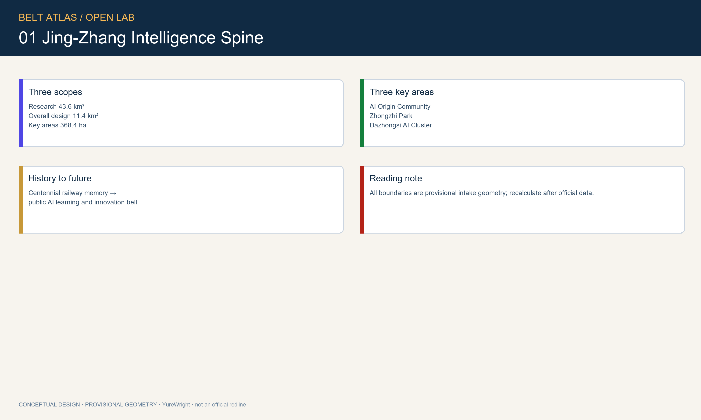
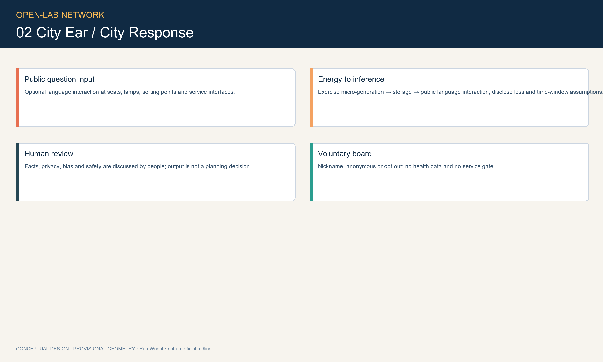
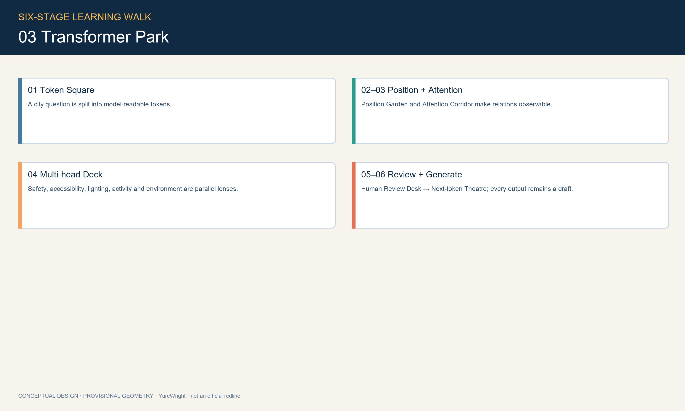
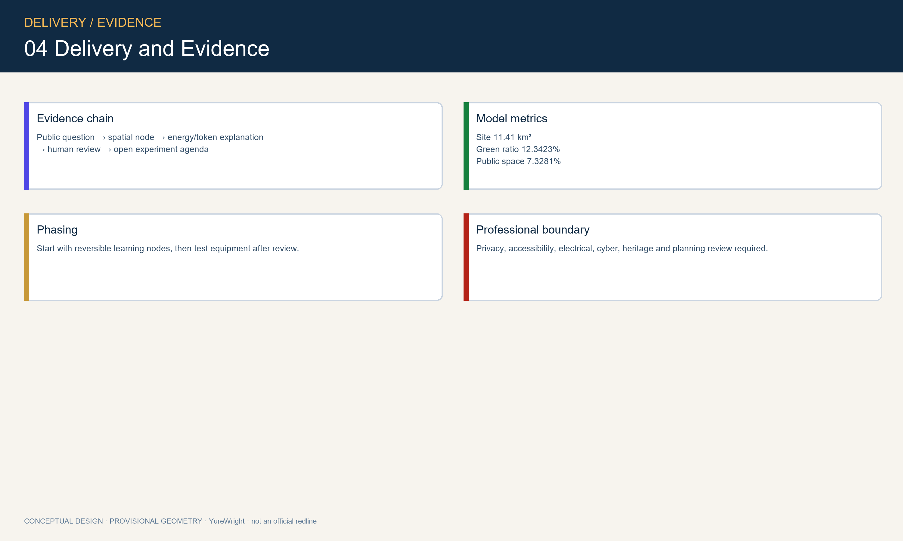

01 Belt Atlas

Three scopes, three key areas and the historical railway-to-public-AI spine.
Centennial Jing-Zhang AI Innovation Belt: a public learning, human-review and reversible-pilot framework.

Three scopes, three key areas and the historical railway-to-public-AI spine.

City Ear, energy-to-inference explanation, voluntary participation and human review.

Token Square, Position Garden, Attention Corridor, multi-head deck, human review and next-token theatre.

Metrics, pilot conditions, professional limits and the evidence chain.
Agent tasks 1–6 are evidenced in the bilingual proposal, compliance matrix, figures, project list and operation matrix. Sources: official announcement, agent taskbook, site package, source registry and six cited public comparative cases. Assumptions: privacy, accessibility, electrical safety, cybersecurity, heritage, maintenance and public-management review are required before any physical or digital pilot.
Self-check status: deterministic validation, spatial review, visual packaging and professional evidence review must be rerun after every edit.